Drug discoveryCSIC · 2025 — present
AI for drug repurposing
Python pipelines that combine retrieval-augmented generation, LLMs and biological evidence to help assess the clinical potential of therapeutic candidates.
Computational biology & AI
Computational biologist and AI scientist turning protein sequences, omics data and scientific literature into models that can be inspected, explained and used for discovery.

Now
At CSIC, I am developing AI methods that connect protein language models, retrieval-augmented generation and biological evidence for therapeutic discovery.
Let’s collaborate →I work across the entire modelling cycle: framing biological questions, preparing data, training and evaluating models, and building research tools people can use.
Python pipelines that combine retrieval-augmented generation, LLMs and biological evidence to help assess the clinical potential of therapeutic candidates.
Encoder-only transformers such as ESM-2, ProtBERT and ProtT5 turn protein sequences into embeddings for downstream prediction.
A Mixture of Experts architecture built from multiple MLPs for binary classification in a research setting, tuned with Optuna.
Machine-learning models and a public web server for linear B-cell epitope prediction, applied to viral immunity and protein sequence research.
EXAMPLE
BCEPS: SVM model with 75.4 ± 5.0 % accuracy on 555 linearized epitopes, and 67.1 % on an independent IEDB dataset.
PyTorch, TensorFlow, scikit-learn, deep learning, transformers, encoder-only models, LLMs, RAG, NLP, binary classification, cross-validation and hyperparameter optimisation.
Protein language models, AlphaFold 3, in silico peptide design, BindCraft, BinderFlow, AlphaPulldown, protein-protein interaction prediction, computational chemistry and immunoinformatics.
Python, R, SQL, NumPy, pandas, biostatistics, UMAP, t-SNE, HPC, GPU computing, Slurm, Docker, Linux, Bash, Git and GitHub.
My work spans machine learning, immunoinformatics, protein modelling and biomedical research. I bring the discipline of peer-reviewed science to practical AI development.
Selected publications · 3 of 16
Margarita Salas Center for Biological Research · CSIC, Madrid
Department of Immunology · Complutense University of Madrid
University of Catania · Computational Modeling in Systems Biomedicine
Department of Immunology · Complutense University of Madrid